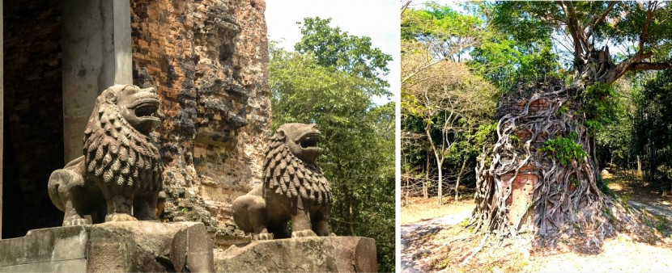
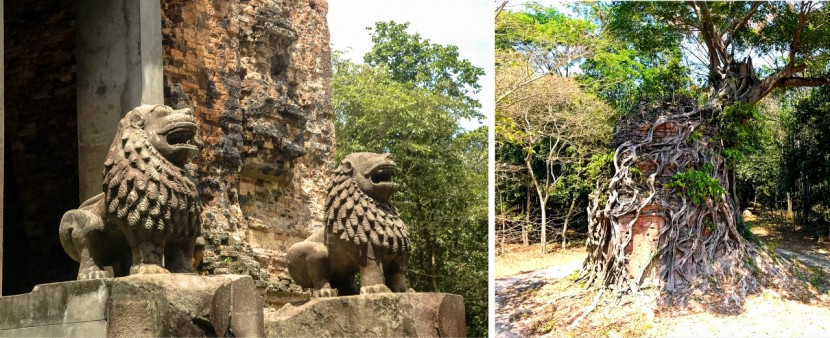

Situated in central Cambodia, Kampong Thom is one of five provinces located at the lower part of the Tonle Sap Lake and rich in historical sites such as temples from the pre-Angkorian era.
The famous Sambor Prei Kuk, an ancient city that has about two hundred brick temples is located here in this province. The city was built during the time of King Isanavarman when he successfully united the territories of Chenla Kork and the Khmer water territory of Chenla Toek. Sambo Prei Kuk served as the capital of the Khmer Empire for many centuries.
It is interesting to first visit Sambor Prei Kuk before visiting the splendid Angkor complex, as its design and style are the foundations that inspired the Angkor civilization.
 
